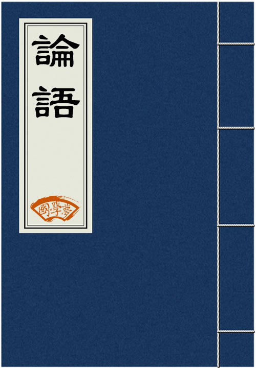

传播国学经典
养育华夏儿女
搜索
首页
国学经典
古诗
诗词名句
诗人大全
成语大全
三字经
千字文
论语
易经
大学
中庸
唐诗
历史
国学知识
古诗鉴赏
当前位置:
国学梦
>
国学经典
>
论语
>

论语
《论语》是一本以记录春秋时期思想家孔子言行为主的言论汇编，在古书中又别以论、语、传、记等字单称，为儒家重要经典之一，在四库全书中为经部。《论语》涉及政治、教育、文学、哲学以及立身处世道理等多方面内容，自汉武帝“罢黜百家，独尊儒术”之后，它被尊为“五经之輨辖，六艺之喉衿”，是研究孔子及儒家思想尤其是先秦儒家思想的一手资料。国学梦论语翻译转自钟茂森博士口述！
论语全文带拼音完整版
学而第一
为政第二
八佾第三
里仁第四
公冶长第五
雍也第六
述而第七
泰伯第八
子罕第九
乡党第十
先进第十一
颜渊第十二
子路第十三
宪问第十四
卫灵公第十五
季氏第十六
阳货第十七
微子第十八
子张第十九
尧曰第二十
子曰：“学而时习之，不亦说乎?有朋自远方来，不亦乐乎?人不知而不愠，不亦
有子曰：“其为人也孝弟，而好犯上者，鲜矣;不好犯上而好作乱者，未之有也
子曰：“巧言令色，鲜矣仁!”
曾子曰：“吾日三省吾身：为人谋而不忠乎?与朋友交而不信乎?传不习乎?”
子曰：“道千乘之国，敬事而信，节用而爱人，使民以时。”
子曰：“弟子入则孝，出则弟，谨而信，泛爱众，而亲仁，行有余力，则以学文
子夏曰：“贤贤易色;事父母，能竭其力;事君，能致其身;与朋友交，言而有信。
子曰：“君子不重则不威，学则不固。主忠信，无友不如己者，过，则勿惮改。
曾子曰：“慎终追远，民德归厚矣。”
子禽问于子贡曰：“夫子至于是邦也，必闻其政，求之与，抑与之与?”子贡曰
子曰：“父在观其志；父没观其行；三年无改于父之道，可谓孝矣。”
有子曰：“礼之用，和为贵。先王之道，斯为美，小大由之。有所不行，知和而
有子曰：“信近于义，言可复也。恭近于礼，远耻辱也。因不失其亲，亦可宗也
子曰：“君子食无求饱，居无求安，敏于事而慎于言，就有道而正焉。可谓好学
子贡曰：“贫而无谄，富而无骄，何如?”子曰：“可也。未若贫而乐，富而好
子曰：“不患人之不己知，患不知人也。”
子曰：“为政以德，譬如北辰，居其所而众星共之。”
子曰：“《诗》三百，一言以蔽之，曰：‘思无邪’。”
子曰：“道之以政，齐之以刑，民免而无耻。道之以德，齐之以礼，有耻且格。
子曰：“吾十有五而志于学，三十而立，四十而不惑，五十而知天命，六十而耳
孟懿子问孝，子曰：“无违。”樊迟御，子告之曰：“孟孙问孝于我，我对曰‘
孟武伯问孝，子曰：“父母唯其疾之忧。”
子游问孝。子曰：“今之孝者，是谓能养。至于犬马皆能有养;不敬，何以别乎
子夏问孝。子曰：“色难。有事，弟子服其劳;有酒食，先生馔，曾是以为孝乎
子曰：“吾与回言终日，不违，如愚。退而省其私，亦足以发，回也不愚。”
子曰：“视其所以，观其所由，察其所安，人焉廋哉？人焉廋哉？”
子曰：“温故而知新，可以为师矣。”
子曰：“君子不器。”
子贡问君子。子曰：“先行其言而后从之。”
子曰：“君子周而不比，小人比而不周。”
子曰：“学而不思则罔，思而不学则殆。”
子曰：“攻乎异端，斯害也已！”
子曰：“由，诲女知之乎!知之为知之，不知为不知，是知也。”
子张学干禄，子曰：“多闻阙疑，慎言其余，则寡尤;多见阙殆，慎行其余，则
哀公问曰：“何为则民服?”孔子对曰：“举直错诸枉，则民服;举枉错诸直，则
季康子问：“使民敬、忠以劝，如之何?”子曰：“临之以庄，则敬;孝慈，则忠
或谓孔子曰：“子奚不为政?”子曰：“《书》云：‘孝乎惟孝，友于兄弟，施
子曰：“人而无信，不知其可也。大车无輗，小车无軏，其何以行之哉?”
子张问：“十世可知也?”子曰：“殷因于夏礼，所损益，可知也;周因于殷礼
子曰：“非其鬼而祭之，谄也;见义不为，无勇也。”
孔子谓季氏:“八佾舞于庭，是可忍也，孰不可忍也?”
三家者以《雍》彻,子曰：“‘相维辟公，天子穆穆’，奚取于三家之堂?”
子曰：“人而不仁，如礼何?人而不仁，如乐何?”
林放问礼之本,子曰：“大哉问!礼，与其奢也，宁俭;丧，与其易也，宁戚。”
子曰：“夷狄之有君，不如诸夏之亡也。”
季氏旅于泰山。子谓冉有曰：“女弗能救与?”对曰：“不能。”子曰：“呜呼
子曰：“君子无所争，必也射乎!揖让而升，下而饮。其争也君子。”
子夏问曰：“‘巧笑倩兮，美目盼兮，素以为绚兮’何谓也?”子曰：“绘事后
子曰：“夏礼吾能言之，杞不足征也;殷礼吾能言之，宋不足征也。文献不足故
子曰：“禘自既灌而往者，吾不欲观之矣。”
或问禘之说。子曰：“不知也。知其说者之于天下也，其如示诸斯乎!”指其掌
祭如在，祭神如神在。子曰：“吾不与祭，如不祭。”
王孙贾问曰：“‘与其媚于奥，宁媚于灶’，何谓也?”子曰：“不然，获罪于
子曰：“周监于二代，郁郁乎文哉!吾从周。”
子入太庙，每事问。或曰：“孰谓鄹人之子知礼乎?入太庙，每事问。”子闻之
子曰：“射不主皮，为力不同科，古之道也。”
子贡欲去告朔之饩羊，子曰：“赐也!尔爱其羊，我爱其礼。”
子曰：“事君尽礼，人以为谄也。”
定公问：“君使臣，臣事君，如之何?”孔子对曰：“君使臣以礼，臣事君以忠
子曰：“《关睢》，乐而不淫，哀而不伤。”
哀公问社于宰我，宰我对曰：“夏后氏以松，殷人以柏，周人以栗，曰使民战栗
子曰：“管仲之器小哉!”或曰：“管仲俭乎?”曰：“管仲有三归，官事不摄，
子语鲁大师乐，曰：“乐其可知也。始作，翕如也;从之，纯如也，皦如也，绎
仪封人请见，曰：“君子之至于斯也，吾未尝不得见也。”从者见之。出曰：“
子谓《韶》：“尽美矣，又尽善也。”谓《武》：“尽美矣，未尽善也。”
子曰：“居上不宽，为礼不敬，临丧不哀，吾何以观之哉?”
子曰：“里仁为美。择不处仁，焉得知?”
子曰：“不仁者不可以久处约，不可以长处乐。仁者安仁，知者利仁。”
子曰：“唯仁者能好人，能恶人。”
子曰：“苟志於仁矣，无恶也。”
子曰：“富与贵，是人之所欲也，不以其道得之，不处也;贫与贱，是人之所恶
子曰：“我未见好仁者，恶不仁者。好仁者，无以尚之;恶不仁者，其为仁矣，
子曰：“人之过也，各于其党。观过，斯知仁矣。”
子曰：“朝闻道，夕死可矣。”
子曰：“士志于道，而耻恶衣恶食者，未足与议也。”
子曰：“君子之于天下也，无适也，无莫也，义之与比。”
子曰：“君子怀德，小人怀土;君子怀刑，小人怀惠。”
子曰：“放于利而行，多怨。”
子曰：“能以礼让为国乎?何有?不能以礼让为国，如礼何?”
子曰：“不患无位，患所以立;不患莫己知，求为可知也。”
子曰：“参乎，吾道一以贯之。”曾子曰：“唯。”子出，门人问曰：“何谓也
子曰：“君子喻于义，小人喻于利。”
子曰：“见贤思齐焉，见不贤而内自省也。”
子曰：“事父母，几谏，谏志不从，又敬不违，劳而不怨。”
子曰：“父母在，不远游，游必有方。”
子曰：“三年无改于父之道，可谓孝矣。”
子曰：“父母之年，不可不知也。一则以喜，一则以惧。”
子曰：“古者言之不出，耻躬之不逮也。”
子曰：“以约失之者鲜矣。”
子曰：“君子欲讷于言而敏于行。”
子曰：“德不孤，必有邻。”
子游曰：“事君数，斯辱矣;朋友数，斯疏矣。”
子谓公冶长：“可妻也，虽在缧绁之中，非其罪也!”以其子妻之。
子谓南容：“邦有道不废;邦无道免于刑戮。”以其兄之子妻之。
子谓子贱：“君子哉若人!鲁无君子者，斯焉取斯?”
子贡问曰：“赐也何如?”子曰：“女器也。”曰：“何器也?”曰：“瑚琏也。
或曰：“雍也仁而不佞。”子曰：“焉用佞?御人以口给，屡憎于人。不知其仁
子使漆雕开仕，对曰：“吾斯之未能信。”子说。
子曰：“道不行，乘桴浮于海，从我者其由与?”子路闻之喜，子曰：“由也好
孟武伯问：“子路仁乎?”子曰：“不知也。”又问，子曰：“由也，千乘之国
子谓子贡曰：“女与回也孰愈?”对曰：“赐也何敢望回?回也闻一以知十，赐也
宰予昼寝，子曰：“朽木不可雕也，粪土之墙不可朽也，于予与何诛?”子曰：
子曰：“吾未见刚者。”或对曰：“申枨。”子曰：“枨也欲，焉得刚。”
子贡曰：“我不欲人之加诸我也，吾亦欲无加诸人。”子曰：“赐也，非尔所及
子贡曰：“夫子之文章，可得而闻也;夫子之言性与天道，不可得而闻也。”
子路有闻，未之能行，唯恐有闻。
子贡问曰：“孔文子何以谓之文也?”子曰：“敏而好学，不耻下问，是以谓之
子谓子产：“有君子之道四焉：其行己也恭，其事上也敬，其养民也惠，其使民
子曰：“晏平仲善与人交，久而敬之。”
子曰：“臧文仲居蔡，山节藻棁，何如其知也?”
子张问曰：“令尹子文三仕为令尹，无喜色，三已之无愠色，旧令尹之政必以告
季文子三思而后行，子闻之曰：“再斯可矣。”
子曰：“宁武子，邦有道则知，邦无道则愚。其知可及也，其愚不可及也。”
子在陈，曰：“归与!归与!吾党之小子狂简，斐然成章，不知所以裁之。”
子曰：“伯夷、叔齐不念旧恶，怨是用希。”
子曰：“孰谓微生高直?或乞醯焉，乞诸其邻而与之。”
子曰：“巧言、令色、足恭，左丘明耻之，丘亦耻之。匿怨而友其人，左丘明耻
颜渊、季路侍，子曰：“盍各言尔志?”子路曰：“愿车马、衣轻裘与朋友共，
子曰：“已矣乎!吾未见能见其过而内自讼者也。”
子曰：“十室之邑，必有忠信如丘者焉，不如丘之好学也。”
子曰：“雍也可使南面。”
仲弓问子桑伯子。子曰：“可也，简。”仲弓曰：“居敬而行简，以临其民，不
哀公问：“弟子孰为好学?”孔子对曰：“有颜回者好学，不迁怒，不贰过，不
子华使于齐，冉子为其母请粟。子曰：“与之釜。”请益。曰：“与之庾。”冉
原思为之宰，与之粟九百，辞。子曰：“毋，以与尔邻里乡党乎!”
子谓仲弓，曰：“犁牛为之骍且角。虽欲勿用，山川棒舍诸?”
子曰：“回也其心三月不违仁，其余则日月至焉而已矣。”
季康子问：“仲由可使从政也与?”子曰：“由也果，于从政乎何有?”曰：“赐
季氏使闵子骞为费宰，闵子骞曰：“善为我辞焉!如有复我者，则吾必在汶上矣
伯牛有疾，子问之，自牖执其手，曰：“亡之，命矣夫，斯人也而有斯疾也!斯
子曰：“贤哉回也，一箪食，一瓢饮，在陋巷，人不堪其忧，回也不改其乐。贤
冉求曰：“非不说子之道，力不足也。”子曰：“力不足者，中道而废。今女画
子谓子夏曰：“女为君子儒，无为小人儒。”
子游为武城宰。子曰：“女得人焉尔乎?”曰：“有澹台灭明者，行不由径，非
子曰：“孟之反不伐，奔而殿，将入门，策其马，曰：非敢后也，马不进也。”
子曰：“不有祝鮀之佞，而有宋朝之美，难乎免于今之世矣。”
子曰：“谁能出不由户，何莫由斯道也?”
子曰：“质胜文则野，文胜质则史。文质彬彬，然后君子。”
子曰：“人之生也直，罔之生也幸而免。”
子曰：“知之者不如好之者，好之者不如乐之者。”
子曰：“中人以上，可以语上也;中人以下，不可以语上也。”
樊迟问知，子曰：“务民之义，敬鬼神而远之，可谓知矣。”问仁，曰：“仁者
子曰：“知者乐水，仁者乐山;知者动，仁者静;知者乐，仁者寿。”
子曰：“齐一变，至于鲁;鲁一变，至于道。”
子曰：“觚不觚，觚哉！觚哉！”
宰我问曰：“仁者虽告之曰井有仁焉，其从之也?”子曰：“何为其然也?君子可
子曰：“君子博学于文，约之以礼，亦可以弗畔矣夫。”
子见南子，子路不说。夫子矢之曰：“予所否者，无厌之！天厌之！”
子曰：“中庸之为德也，其至矣乎！民鲜久矣。”
子贡曰：“如有博施于民而能济众，何如?可谓仁乎?”子曰：“何事于仁?必也圣
子曰：“述而不作，信而好古，窃比于我老彭。”
子曰：“默而识之，学而不厌，诲人不倦，何有于我哉?”
子曰：“德之不修，学之不讲，闻义不能徙，不善不能改，是吾忧也。”
子之燕居，申申如也，夭夭如也。
子曰：“甚矣吾衰也!久矣吾不复梦见周公。”
子曰：“志于道，据于德，依于仁，游于艺。”
子曰：“自行束脩以上，吾未尝无诲焉。”
子曰：“不愤不启，不悱不发。举一隅不以三隅反，则不复也。”
子食于有丧者之侧，未尝饱也。
子于是日哭，则不歌。
子谓颜渊曰：“用之则行，舍之则藏，惟我与尔有是夫!”子路曰：“子行三军
子曰：“富而可求也;虽执鞭之士，吾亦为之。如不可求，从吾所好。”
子之所慎：齐、战、疾
子在齐闻《韶》，三月不知肉味，曰：“不图为乐之至于斯也。”
冉有曰：“夫子为卫君乎?”子贡曰：“诺，吾将问之。”入，曰：“伯夷、叔
子曰：“饭疏食饮水，曲肱而枕之，乐亦在其中矣。不义而富且贵，于我如浮云
子曰：“加我数年，五十以学易，可以无大过矣。”
子所雅言，诗书执礼，皆雅言也。
叶公问孔子于子路，子路不对。子曰：“女奚不曰，其为人也，发愤忘食，乐以
子曰：“我非生而知之者，好古，敏以求之者也。”
子不语怪、力、乱、神
子曰：“三人行，必有我师焉。择其善者而从之，其不善者而改之。”
子曰：“天生德于予，桓魋其如予何?”
子曰：“二三子以我为隐乎?吾无隐乎尔。吾无行而不与二三子者，是丘也。”
子以四教：文、行、忠、信
子曰：“圣人吾不得而见之矣!得见君子者，斯可矣。”子曰：“善人吾不得而
子钓而不纲，弋不射宿。
子曰：“盖有不知而作之者，我无是也。多闻，择其善者而从之，多见而识之，
互乡难与言，童子见，门人惑。子曰：“与其进也，不与其退也，唯何甚?人洁
子曰：“仁远乎哉?我欲仁，斯仁至矣。”
陈司败问：“昭公知礼乎?“孔子曰：“知礼。”孔子退，揖巫马期而进之曰：
子与人歌而善，必使反之，而后和之。
子曰：“文，莫吾犹人也。躬行君子，则吾未之有得。”
子曰：“若圣与仁，则吾岂敢?抑为之不厌，诲人不倦，则可谓云尔已矣。”公
子疾病，子路请祷。子曰：“有诸?”子路对曰：“有之。《诔》曰：‘祷尔于
子曰：“奢则不孙，俭则固。与其不孙也，宁固。”
子曰：“君子坦荡荡，小人长戚戚。”
子温而厉，威而不猛，恭而安。
子曰：“泰伯，其可谓至德也已矣。三以天下让，民无得而称焉。”
子曰：“恭而无礼则劳，慎而无礼则葸，勇而无礼则乱，直而无礼则绞。君子笃
曾子有疾，召门弟子曰：“启予足!启予手!诗云：‘战战兢兢，如临深渊，如履
曾子有疾，孟敬子问之。曾子言曰：“鸟之将死，其鸣也哀;人之将死，其言也
曾子曰：“以能问于不能，以多问于寡;有若无，实若虚;犯而为校。昔者吾友尝
曾子曰：“可以托六尺之孤，可以寄百里之命，临大节而不可夺也。君子人与
曾子曰：“士不可以不弘毅，任重而道远。仁以为己任，不亦重乎?死而后已，
子曰：“兴于诗，立于礼，成于乐。”
子曰：“民可使由之，不可使知之。”
子曰：“好勇疾贫，乱也。人而不仁，疾之已甚，乱也。”
子曰：“如有周公之才之美，使骄且吝，其余不足观也已。”
子曰：“三年学，不至于谷，不易得也。”
子曰：“笃信好学，守死善道，危邦不入，乱邦不居。天下有道则见，无道则隐
子曰：“不在其位，不谋其政。
子曰：“师挚之始，《关睢》之乱，洋洋乎盈耳哉!”
子曰：“狂而不直，侗而不愿，悾悾而不信，吾不知之矣。”
子曰：“学如不及，犹恐失之。”
子曰：“巍巍乎，舜禹之有天下也而不与焉!”
子曰：“大哉尧之为君也!巍巍乎，唯天为大，唯尧则之。荡荡乎，民无能名焉
舜有臣五人而天下治。武王曰：“予有乱臣十人。”孔子曰：“才难，不其然乎
子曰：“禹，吾无间然矣。菲饮食而致孝乎鬼神，恶衣服而致美乎黻冕;卑宫室
子罕言利与命与仁
达巷党人曰：“大哉孔子!博学而无所成名。”子闻之，谓门弟子曰：“吾何执
子曰：“麻冕，礼也;今也纯，俭，吾从众。拜下，礼也;今拜乎上，泰也。虽违
子绝四：毋意，毋必，毋固，毋我。
子畏于匡，曰：“文王既没，文不在兹乎?天之将丧斯文也，后死者不得与于斯
太宰问于子贡曰：“夫子圣者与?何其多能也?”子贡曰：“固天纵之将圣，又多
牢曰：“子云，‘吾不试，故艺'。”
子曰：“吾有知乎哉?无知也。有鄙夫问于我，空空如也。我叩其两端而竭焉。
子曰：“凤鸟不至，河不出图，吾已矣夫!”
子见齐衰者，冕衣裳者与瞽者，见之，虽少，必作;过之，必趋。
颜渊喟然叹曰：“仰之弥高，钻之弥坚，瞻之在前，忽焉在后。夫子循循然善诱
子疾病，子路使门人为臣。病间，曰：“久矣哉，由之行诈也。无臣而为有臣。
子贡曰：“有美玉于斯，韫匵而藏诸?求善贾而沽诸?”子曰：“沽之哉，沽之哉
子欲居九夷。或曰：“陋，如之何?”子曰：“君子居之，何陋之有?”
子曰：“吾自卫反鲁，然后乐正，雅颂各得其所。”
子曰：“出则事公卿，入则事父兄，丧事不敢不勉，不为酒困，何有于我哉。”
子在川上曰：“逝者如斯夫，不舍昼夜。”
子曰：“吾未见好德如好色者也。”
子曰：“譬如为山，未成一篑，止，吾止也;譬如平地，虽覆一篑，进，吾往也
子曰：“语之而不惰者，其回也与!”
子谓颜渊曰：“惜乎!吾见其进也，未见其止也。”
子曰：“苗而不秀者有矣夫;秀而不实者有矣夫!”
子曰：“后生可畏，焉知来者之不如今也?四十、五十而无闻焉，斯亦不足畏也
子曰：“法语之言，能无从乎?改之为贵。巽与之言，能无说乎?绎之为贵。说而
子曰：“主忠信，毋友不如己者，过则勿惮改。”
子曰：“三军可夺帅也，匹夫不可夺志也。”
子曰：“衣敝缊袍，与衣狐貉者立而不耻者，其由也与?‘不忮不求，何用不臧
子曰：“岁寒，然后知松柏之后彫后也。”
子曰：“知者不惑，仁者不忧，勇者不惧。”
子曰：“可与共学，未可与适道;可与适道，未可与立;可与立，未可与权。”
“唐棣之华，偏其反而。岂不尔思，室是远而。”子曰：“未之思也，夫何远之
孔子于乡党，恂恂如也，似不能言者。其在宗庙、朝廷，便便言，唯谨尔。
朝，与下大夫言，侃侃如也;与上大夫言，訚訚如也。君在，踧踖如也，与与如
君召使摈，色勃如也;足躩如也。揖所与立，左右手，衣前后，襜如也。趋进，
入公门，鞠躬如也，如不容。立不中门，行不履阈。过位，色勃如也，足躩如也
执圭，鞠躬如也，如不胜。上如揖，下如授。勃如战色，足蹜蹜，如有循。享礼
君子不以绀緅饰，红紫不以为亵服。当暑，袗絺绤，必表而出之。缁衣，羔裘
齐，必有明衣，布。齐必变食，居必迁坐。
食不厌精，脍不厌细。食饐而餲，鱼馁而肉败，不食。色恶，不食。臭恶，不食
乡人饮酒，杖者出，斯出矣。乡人傩，朝服而立于阼阶。
问人于他邦，再拜而送之。康子馈药，拜而受之。曰：“丘未达，不敢尝。”
厩焚。子退朝，曰：“伤人乎？”不问马。
君赐食，必正席先尝之。君赐腥，必熟而荐之。君赐生，必畜之。侍食于君，君
入太庙 每事问
朋友死，无所归，曰：“于我殡。”
朋友之馈，虽车马，非祭肉，不拜。
寝不尸，居不客。见齐衰者，虽狎，必变。见冕者与瞽者，虽亵，必以貌。凶服
升车，必正立，执绥。车中，不内顾，不疾言，不亲指。
色斯举矣，翔而后集。曰：“山梁雌雉，时哉时哉!”子路共之，三嗅而作。
子曰：“先进于礼乐，野人也;后进于礼乐，君子也。如用之，则吾从先进。”
子曰：“从我于陈、蔡者，皆不及门也。”德行：颜渊、闵子骞、冉伯牛、仲弓
子曰：“回也非助我者也，于吾言无所不说。”
子曰：“孝哉闵子骞!人不间于其父母昆弟之言。”
南容三复白圭，孔子以其兄之子妻之。
季康子问：“弟子孰为好学?”孔子对曰：“有颜回者好学，不幸短命死矣，今
颜渊死，颜路请子之车以为之椁。子曰：“才不才，亦各言其子也。鲤也死，有
颜渊死，子曰：“噫!天丧予!天丧予!”
颜渊死，子哭之恸。从者曰：“子恸矣。”曰：“有恸乎?非夫人之为恸而谁为
颜渊死，门人欲厚葬之，子曰：“不可。”门人厚葬之。子曰：“回也视予犹父
季路问事鬼神。子曰：“未能事人，焉能事鬼?”曰：“敢问死。”曰：“未知
闵子侍侧，訚訚如也;子路，行行如也;冉有、子贡，侃侃如也。子乐。“若由也
鲁人为长府。闵子骞曰：“仍旧贯，如之何?何必改作?”子曰：“夫人不言，言
子曰：“由之瑟奚为于丘之门?”门人不敬子路。子曰：“由也升堂矣，未入于
子贡问：“师与商也孰贤?”子曰：“师也过，商也不及。”曰：“然则师愈与
季氏富于周公，而求也为之聚敛而附益之。子曰：“非吾徒也。小子鸣鼓而攻之
柴也愚，参也鲁，师也辟，由也喭。子曰：“回也其庶乎，屡空。赐不受命，而
子张问善人之道，子曰：“不践迹，亦不入于室。”
子曰 论笃是与 君子者乎 色庄者乎
子路问：“闻斯行诸?”子曰：“有父兄在，如之何其闻斯行之?”冉有问：“闻
子畏于匡，颜渊后。子曰：“吾以女为死矣。”曰：“子在，回何敢死?”
季子然问：“仲由、冉求可谓大臣与?”子曰：“吾以子为异之问，曾由与求之
子路使子羔为费宰。子曰：“贼夫人之子。”子路曰：“有民人焉，有社稷焉，
子路、曾皙、冉有、公西华侍坐。子曰：“以吾一日长乎尔，毋吾以也。居则曰
颜渊问仁。子曰：“克己复礼为仁。一日克己复礼，天下归仁焉。为仁由己，而
仲弓问仁。子曰：“出门如见大宾，使民如承大祭;己所不欲，勿施于人;在邦无
司马牛问仁。子曰：“仁者，其言也讱。”曰：“其言也讱，斯谓之仁已乎?”
司马牛问君子。子曰：“君子不忧不惧。”曰：“不忧不惧，斯谓之君子已乎
司马牛忧曰：“人皆有兄弟，我独亡。”子夏曰：“商闻之矣：死生有命，富贵
子张问明：子曰：“浸润之谮，肤受之愬，不行焉，可谓明也已矣。浸润之谮，
子贡问政。子曰：“足食，足兵，民信之矣。”子贡曰：“必不得已而去，于斯
棘子成曰：“君子质而已矣，何以文为?”子贡曰：“惜乎夫子之说君子也!驷不
哀公问于有若曰：“年饥，用不足，如之何?”有若对曰：“盍彻乎?”曰：“二
子张问崇德辨惑。子曰：“主忠信，徙义，崇德也。爱之欲其生，恶之欲其死，
齐景公问政于孔子。孔子对曰：“君君、臣臣、父父、子子。”公曰：“善哉
子曰：“片言可以折狱者，其由也与?”子路无宿诺。
子曰：“听讼，吾犹人也。必也使无讼乎!”
子张问政。子曰：“居之无倦，行之以忠。”
子曰：“博学于文，约之以礼，亦可以弗畔矣夫!”
子曰：“君子成人之美，不成人之恶。小人反是。”
季康子问政于孔子。孔子对曰：“政者正也。子帅以正，孰敢不正?”
季康子患盗，问于孔子。孔子对曰：“苟子之不欲，虽赏之不窃。”
季康子问政于孔子曰：“如杀无道，以就有道，何如?”孔子对曰：“子为政，
子张问：“士何如斯可谓之达矣?”子曰：“何哉，尔所谓达者?”子张对曰：“
樊迟从游于舞雩之下，曰：“敢问崇德、修慝、辨惑。”子曰：“善哉问!先事
攀迟问仁。子曰：“爱人。”问知。子曰：“知人。”樊迟未达。子曰：“举直
子贡问友。子曰：“忠告而善道之，不可则止，毋自辱也。”
曾子曰：“君子以文会友，以友辅仁。”
子路问政。子曰：“先之劳之。”请益。曰：“无倦。”
仲弓为季氏宰，问政。子曰：“先有司，赦小过，举贤才。”曰：“焉知贤才而
子路曰：“卫君待子为政，子将奚先?”子曰：“必也正名乎!”子路曰：“有是
樊迟请学稼。子曰：“吾不如老农。”请学为圃。曰：“吾不如老圃。”樊迟出
子曰：“诵诗三百，授之以政，不达;使于四方，不能专对。虽多，亦奚以为?”
子曰：“其身正，不令而行;其身不正，虽令不从。”
子曰：“鲁卫之政，兄弟也。”
子谓卫公子荆：“善居室。始有，曰：‘苟合矣'。少有，曰：‘苟完矣。'富有
子适卫，冉有仆。子曰：“庶矣哉!”冉有曰：“既庶矣，又何加焉?”曰：“富
子曰：“苟有用我者，期月而已可也，三年有成。”
子曰：“善人为邦百年，亦可以胜残去杀矣。诚哉是言也!”
子曰：“如有王者，必世而后仁。”
子曰：“苟正其身矣，于从政乎何有?不能正其身，如正人何?”
冉子退朝。子曰：“何晏也?”对曰：“有政。”子曰：“其事也?如有政，虽不
定公问：“一言而可以兴邦，有诸?”孔子对曰：“言不可以若是其几也。人之
叶公问政。子曰：“近者悦，远者来。”
子夏为莒父宰，问政。子曰：“无欲速，无见小利。欲速则不达，见小利则大事
叶公语孔子曰：“吾党有直躬者，其父攘羊，而子证之。”孔子曰：“吾党之直
樊迟问仁。子曰：“居处恭，执事敬，与人忠。虽之夷狄，不可弃也。”
子贡问曰：“何如斯可谓之士矣?”子曰：“行已有耻，使于四方，不辱君命，
子曰：“不得中行而与之，必也狂狷乎!狂者进取，狷者有所不为也。”
子曰：“南人有言曰：‘人而无恒，不可以作巫医。'善夫!”“不恒其德，或承
子曰：“君子和而不同，小人同而不和。”
子贡问曰：“乡人皆好之，何如?”子曰：“未可也。”“乡人皆恶之，何如?”
子曰：“君子易事而难说也。说之不以道，不说也;及其使人也，器之。小人难
子曰：“君子泰而不骄，小人骄而不泰。”
子曰：“刚、毅、木、讷近仁。”
子路问曰：“何如斯可谓之士矣?”子曰：“切切偲偲，怡怡如也，可谓士矣。
子曰：“善人教民七年，亦可以即戎矣。”
子曰：“以不教民战，是谓弃之。”
宪问耻。子曰：“邦有道，谷;邦无道，谷，耻也。”“克、伐、怨、欲不行焉
子曰：“士而怀居，不足以为士矣。”
子曰：“邦有道，危言危行;邦无道，危行言孙。”
子曰：“有德者必有言，有言者不必有德。仁者必有勇，勇者不必有仁。”
南宫适问于孔子曰：“羿善射，奡荡舟，俱不得其死然。禹稷躬稼而有天下。”
子曰：“君子而不仁者有矣夫，未有小人而仁者也。”
子曰：“爱之，能勿劳乎?忠焉，能勿诲乎?”
子曰：“为命，裨谌草创之，世叔讨论之，行人子羽修饰之，东里子产润色之。
或问子产。子曰：“惠人也。”问子西。曰：“彼哉!彼哉!”问管仲。曰：“人
子曰：“贫而无怨难，富而无骄易。”
子曰：“孟公绰为赵魏老则优，不可以为滕薛大夫。”
子路问成人。子曰：“若臧武仲之知，公绰之不欲，卞庄子之勇，冉求之艺，文
子问公叔文子于公明贾曰：“信乎，夫子不言，不笑，不取乎?”公明贾对曰：
子曰：“臧武仲以防求为后于鲁，虽曰不要君，吾不信也。”
子曰：“晋文公谲而不正，齐桓公正而不谲。”
子路曰：“桓公杀公子纠，召忽死之，管仲不死。”曰：“未仁乎?”子曰：“
子贡曰：“管仲非仁者与?桓公杀公子纠，不能死，又相之。”子曰：“管仲相
公叔文子之臣大夫僎，与文子同升诸公。子闻之，曰：“可以为文矣。”
子言卫灵公之无道也，康子曰：“夫如是，奚而不丧?”孔子曰：“仲叔圉治宾
子曰：“其言之不怍，则为之也难。”
陈成子弑简公，孔子沐浴而朝，告于哀公曰：“陈恒弑其君，请讨之。”公曰：
子路问事君。子曰：“勿欺也，而犯之。”
子曰：“君子上达，小人下达。”
子曰：“古之学者为己，今之学者为人。”
蘧伯玉使人于孔子，孔子与之坐而问焉。曰：“夫子何为?”对曰：“夫子欲寡
子曰：“不在其位，不谋其政。”曾子曰：“君子思不出其位。”
子曰：“君子耻其言而过其行。”
子曰：“君子道者三，我无能焉：仁者不忧，知者不惑，勇者不惧。”子贡曰：
子贡方人。子曰：“赐也贤乎哉?夫我则不暇。”
子曰：“不患人之不己知，患其不能也。”
子曰：“不逆诈，不亿不信，抑亦先觉者，是贤乎!”
微生亩谓孔子曰：“丘，何为是栖栖者与?无乃为佞乎?”孔子曰：“非敢为佞也
子曰：“骥不称其力，称其德也。”
或曰：“以德报怨，何如?”子曰：“何以报德?以直报怨，以德报德。”
子曰：“莫我知也夫!”子贡曰：“何为其莫知子也?”子曰：“不怨天，不尤人
公伯寮愬子路于季孙。子服景伯以告，曰：“夫子固有惑志于公伯寮，吾力犹能
子曰：“贤者辟世，其次辟地，其次辟色，其次辟言。”子曰：“作者七人矣。
子路宿于石门。晨门曰：“奚自?”子路曰：“自孔氏。”曰：“是知其不可而
子击磬于卫，有荷蒉而过孔氏之门者，曰：“有心哉，击磬乎!”既而曰：“鄙
子张曰：“书云：‘高宗谅阴，三年不言。'何谓也?”子曰：“何必高宗?古之人
子曰：“上好礼，则民易使也。”
子路问君子。子曰：“修己以敬。”曰：“如斯而已乎?”曰：“修己以安人。
原壤夷俟。子曰：“幼而不孙弟，长而无述焉，老而不死，是为贼。”以杖叩其
阙党童子将命。或问之曰：“益者与?”子曰：“吾其居于位也，见其与先生并
卫灵公问陈于孔子。孔子对曰：“俎豆之事，则尝闻之矣;军旅之事，未之学也
在陈绝粮，从者病，莫能兴。子路愠见曰：“君子亦有穷乎?”子曰：“君子固
子曰：“赐也!女以予为多学而识之者与?”对曰：“然，非与?”曰：“非也。予
子曰：“由!知德者鲜矣。”
子曰：“无为而治者，其舜也与?夫何为哉?恭己正南面而已矣。”
子张问行。子曰“言忠信，行笃敬，虽蛮貊之邦，行矣。言不忠信，行不笃敬，
子曰：“直哉史鱼!邦有道，如矢;邦无道，如矢。君子哉蘧伯玉!邦有道，则仕
子曰：“可与言而不与之言，失人;不可与言而与言，失言。知者不失人，亦不
子曰：“志士仁人，无求生以害仁，有杀身以成仁。”
子贡问为仁。子曰：“工欲善其事，必先利其器。居是邦也，事其大夫之贤者，
颜渊问为邦。子曰：“行夏之时，乘殷之辂，服周之冕，乐则韶舞。放郑声，远
子曰：“人无远虑，必有近忧。”
子曰：“已矣乎!吾未见好德如好色者也。”
子曰：“臧文仲其窃位者与!知柳下惠之贤而不与立也。”
子曰：“躬自厚而薄责于人，则远怨矣。”
子曰：“不曰‘如之何，如之何'者，吾末如之何也已矣。”
子曰：“群居终日，言不及义，好行小慧，难矣哉!”
子曰：“君子义以为质，礼以行之，孙以出之，信以成之。君子哉!”
子曰：“君子病无能焉，不病人之不己知也。”
子曰：“君子疾没世而名不称焉。”
子曰：“君子求诸己，小人求诸人。”
子曰：“君子矜而不争，群而不党。”
子曰：“君子不以言举人，不以人废言。”
子贡问曰：“有一言而可以终身行之者乎?”子曰：“其恕乎!己所不欲，勿施于
子曰：“吾之于人也，谁毁谁誉?”如有所誉者，其有所试矣。斯民也，三代之
子曰：“吾犹及史之阙文也，有马者借人乘之，今亡矣夫。”
子曰：“巧言乱德。小不忍则乱大谋。”
子曰：“众恶之，必察焉；众好之，必察焉。”
子曰：“人能弘道，非道弘人。”
子曰：“过而不改，是谓过矣。”
子曰：“吾尝终日不食，终夜不寝，以思，无益，不如学也。”
子曰：“君子谋道不谋食。耕也，馁在其中矣;学也，禄在其中矣。君子忧道不
子曰：“知及之，仁不能守之;虽得之，必失之;知及之，仁能守之，不庄以涖之
子曰：“君子不可小知而可大受也，小人不可大受而可小知也。”
子曰：“民之于仁也，甚于水火。水火，吾见蹈而死者矣，未见蹈仁而死者也。
子曰：“当仁，不让于师。”
子曰：“君子贞而不谅。”
子曰：“事君，敬其事而后其食。”
子曰：“有教无类。”
子曰：“道不同，不相为谋。”
子曰：“辞达而已矣。”
“师冕见，及阶，子曰：“阶也。”及席，子曰：“席也。”皆坐，子告之曰：
季氏将伐颛臾。冉有、季路见于孔子曰：“季氏将有事于颛臾。”孔子曰：“求
孔子曰：“天下有道，则礼乐征伐自天子出;天下无道，则礼乐征伐自诸侯出。
孔子曰：“禄之去公室五世矣，政逮于大夫四世矣，故夫三桓之子孙微矣。”
孔子曰：“益者三友，损者三友。友直，友谅，友多闻，益矣。友便辟，友善柔
孔子曰：“益者三乐，损者三乐。乐节礼乐，乐道人之善，乐多贤友，益矣。乐
孔子曰：“侍于君子有三愆：言未及之而言谓之躁，言及之而不言谓之隐，未见
孔子曰：“君子有三戒：少之时，血气未定，戒之在色;及其壮也，血气方刚，
孔子曰：“君子有三畏：畏天命，畏大人，畏圣人之言。小人不知天命而不畏也
孔子曰：“生而知之者，上也;学而知之者，次也;困而学之，又其次也;困而不学
孔子曰：“君子有九思：视思明，听思聪，色思温，貌思恭，言思忠，事思敬，
子曰：“见善如不及，见不善如探汤。吾见其人矣，吾闻其语矣。隐居以求其志
齐景公有马千驷，死之日，民无德而称焉。伯夷叔齐饿死于首阳之下，民到于今
陈亢问于伯鱼曰：“子亦有异闻乎?”对曰：“未也。尝独立，鲤趋而过庭。曰
邦君之妻，君称之曰夫人，夫人自称曰小童;邦人称之曰君夫人，称诸异邦曰寡
阳货欲见孔子，孔子不见，归孔子豚。孔子时其亡也，而往拜之，遇诸涂。谓孔
子曰：“性相近也，习相远也。”
子曰：“唯上知与下愚不移。”
子之武城，闻弦歌之声。夫子莞尔而笑，曰：“割鸡焉用牛刀?”子游对曰：“
公山弗扰以费畔，召，子欲往。子路不悦，曰：“末之也已，何必公山氏之之也
子张问仁于孔子。孔子曰：“能行五者于天下为仁矣。”“请问之。”曰：“恭
佛肸召，子欲往。子路曰：昔者由也闻诸夫子曰：‘亲于其身为不善者，君子不
子曰：“由也，女闻六言六蔽矣乎?”对曰：“未也。”“居，吾语女。好仁不
子曰：“小子何莫学夫诗。诗，可以兴，可以观，可以群，可以怨。迩之事父，
子谓伯鱼曰：“女为《周南》、《召南》矣乎?人而不为《周南》、《召南》，
子曰：“礼云礼云，玉帛云乎哉?乐云乐云，钟鼓云乎哉?”
子曰：“色厉而内荏，譬诸小人，其犹穿窬之盗也与?”
子曰：“乡愿，德之贼也。”
子曰：“道听而涂说，德之弃也。”
子曰：“鄙夫可与事君也与哉?其未得之也，患得之。既得之，患失之。苟患失
子曰：“古者民有三疾，今也或是之亡也。古之狂也肆，今之狂也荡;古之矜也
子曰：“巧言令色，鲜矣仁。”
子曰：“恶紫之夺朱也，恶郑声之乱雅乐也，恶利口之覆邦家者。”
子曰：“予欲无言。”子贡曰：“子如不言，则小子何述焉?”子曰：“天何言
孺悲欲见孔子，孔子辞以疾。将命者出户，取瑟而歌，使之闻之。
宰我问：“三年之丧，期已久矣。君子三年不为礼，礼必坏;三年不为乐，乐必
子路曰：“饱食终日，无所用心，难矣哉!不有博奕者乎?为之，犹贤乎已。”
子路曰：“君子尚勇乎?”子曰：“君子义以为上。君子有勇而无义为乱，小人
子贡曰：“君子亦有恶乎?”子曰：“有恶。恶称人之恶者，恶居下流而讪上者
子曰：“唯女子与小人为难养也，近之则不孙，远之则怨。”
子曰：“年四十而见恶焉，其终也已。”
微子去之，箕子为之奴，比干谏而死。孔子曰：“殷有三仁焉。”
柳下惠为士师，三黜。人曰：“子未可以去乎?”曰：“直道而事人，焉往而不
齐景公待孔子曰：“若季氏，则吾不能;以季、孟之间待之。”曰：“吾老矣，
齐人归女乐，季桓子受之，三日不朝，孔子行。”
楚狂接舆歌而过孔子曰：“凤兮凤兮，何德之衰?往者不可谏，来者犹可追。已
长沮、桀溺耦而耕，孔子过之，使子路问津焉。长沮曰：“夫执舆者为谁?”子
子路从而后，遇丈人，以杖荷蓧。子路问曰：“子见夫子乎?”丈人曰：“四体
逸民：伯夷、叔齐、虞仲、夷逸、朱张、柳下惠、少连。子曰：“不降其志，不
大师挚适齐，亚饭干适楚，三饭缭适蔡，四饭缺适秦，鼓方叔入于河，播鼗武入
周公谓鲁公曰：“君子不施其亲，不使大臣怨乎不以，故旧无大故则不弃也，无
周有八士：伯达、伯适、仲突、仲忽、叔夜、叔夏、季随、季騧。
子张曰：“士见危致命，见得思义，祭思敬，丧思哀，其可已矣。”
子张曰：“执德不弘，信道不笃，焉能为有?焉能为亡?”
子夏之门人问交于子张。子张曰：“子夏云何?”对曰：“子夏曰：‘可者与之
子夏曰;“虽小道，必有可观者焉，致远恐泥，是以君子不为也。”
子夏曰：“日知其所亡，月无忘其所能，可谓好学也已矣。”
子夏曰;“博学而笃志，切问而近思，仁在其中矣。”
子夏曰：“百工居肆以成其事，君子学以致其道。”
子夏说：“小人之过也必文。”
子夏曰：“君子有三变：望之俨然，即之也温，听其言也厉。”
子夏曰：“君子信而后劳其民;未信，则以为厉己也，信而后谏;未信，则以为谤
子夏曰：“大德不逾闲，小德出入可也。”
子游曰：“子夏之门人小子，当洒扫应对进退，则可矣，抑末也。本之则无，如
子夏曰：“仕而优则学，学而优则仕。”
子游曰：“丧致乎哀而止。”
子游曰：“吾友张也为难能也，然而未仁。”
曾子曰：“堂堂乎张也，难与并为仁矣。”
曾子曰：“吾闻诸夫子，人未有自致者也，必也亲丧乎。”
曾子曰：“吾闻诸夫子，孟庄子之孝也，其他可能也;其不改父之臣与父之政，
孟氏使阳肤为士师，问于曾子。曾子曰：“上失其道，民散久矣。如得其情，则
子贡曰：“纣之不善，不如是之甚也。是以君子恶居下流，天下之恶皆归焉。”
子贡曰：“君子之过也，如日月之食焉。过也，人皆见之;更也，人皆仰之。”
卫公孙朝问于子贡曰：“仲尼焉学?”子贡曰：“文武之道，未坠于地，在人。
叔孙武叔语大夫于朝曰：“子贡贤于仲尼。”子服景伯以告子贡。子贡曰;“譬
叔孙武叔毁仲尼。子贡曰;“无以为也!仲尼不可毁也。他人之贤者，丘陵也，犹
陈子禽谓子贡曰：“子为恭也，仲尼岂贤于子乎?”子贡曰：“君子一言以为知
尧曰：“咨!尔舜!天之历数在尔躬，允执其中。四海困穷，天禄永终。”舜亦以
子张问孔子曰：“何如斯可以从政矣?”子曰：“尊五美，屏四恶，斯可以从政
孔子曰：“不知命，无以为君子也;不知礼，无以立也;不知信，无以知人也。”
论语十二章
论语十则
子曰：“志于道，据于德，依于仁，游于艺。”(02)
国学经典推荐
国学经典
诗人
初唐四杰
爱国诗人
唐宋八大家
唐诗三百首
宋词三百首
写景诗
咏物诗
边塞诗
中秋节
抒情诗
爱国诗
离别诗
送别诗
思乡诗
思念诗
励志诗
悼亡诗
哲理诗
爱情诗
婉约词
惜时诗
写人诗
赞美母亲
赞美老师
古诗
古诗十九首
经典咏流传第三季
小李杜
中国诗词大会第六季
中国好诗歌
钱肃乐
虞世南
祝颢
宇文融
陈亮
刘孝孙
绿草如茵
掩耳而走
敛容息气
短褐不完
 皖公网安备 34160202002390号
皖公网安备 34160202002390号